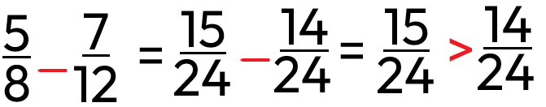

Porovnávání
Porovnávání zlomků je klíčová dovednost při práci s nimi, zejména při sčítání a odčítání. K porovnání zlomků používáme křížové pravidlo, které spočívá v porovnání součinu čitatele prvního zlomku s jmenovatelem druhého zlomku a naopak. Pokud je výsledek jednoho součinu větší, znamená to, že první zlomek je větší. Tato metoda usnadňuje rychlé porovnání bez nutnosti hledat společného jmenovatele.
1. krok
převést na stejného jmenovatele (vynásobit nebo vydělit jeden zlomek tak, aby měl stejného jmenovatele)
2. krok
zlomek, který má většího čitatele, je větší
